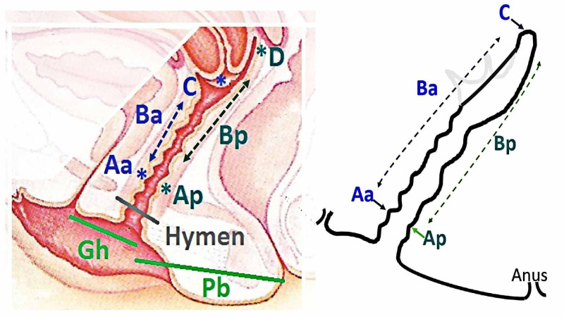

Página 11 · Prolapsos / distopia genital
Testa você: três POP-Q na mesa
A lógica de leitura: anterior → posterior → colo ou cúpula
O jeito de não errar é sempre o mesmo: percorrer a parede anterior (Aa/Ba), depois a posterior (Ap/Bp), depois o ápice — e no ápice perguntar se o C é colo ou cúpula (olhando o ponto D). Feito esse percurso, o diagnóstico e a conduta caem. Três casos treinam exatamente isso.
Simulado 1: tudo prolapsado (uterino + anterior + posterior)
Pontos: Aa 0, Ba +1 (anterior, que deveria estar em −3 → está prolapsado); Ap 0, Bp +1 (posterior, idem); C +4 (colo 4 cm para fora); D +2 (fundo de saco também para fora). Percorrendo: anterior para fora, posterior para fora, e o ápice (C +4, com D presente → é colo) também para fora. Diagnóstico: prolapso uterino + prolapso vaginal anterior + prolapso vaginal posterior — tem tudo. A banca às vezes cita só o que está mais para fora (aqui, o colo +4 → “prolapso uterino”), mas o quadro é multicompartimental.
Simulado 2: só apical, sem ponto D (cúpula)
Aqui não há prolapso anterior nem posterior; há um ponto C, mas sem ponto D (registrado como X/tracejado). Percorrendo: anterior normal, posterior normal, e no ápice o C existe mas não tem D → como não tem ponto D, esse C é a cúpula. Diagnóstico: prolapso de cúpula. É o ponto D fazendo seu trabalho de detetive — sem ele, o topo que desceu é a cúpula de quem não tem útero.
Simulado 3 e o “normal”: anterior isolado × tudo em −3 (USP Capital)
Primeiro o normal: um dos desafios tem tudo em −3 — sem prolapso anterior, posterior nem de colo. Está tudo bem. E aqui vem a pegadinha-mãe da recuperação ativa: não tenha medo de marcar que está tudo normal. É uma parte da prova em que não se pode hesitar em marcar o normal — esse exato caso já caiu na USP Capital. Depois o Simulado 3: sem prolapso posterior nem uterino; o colo está a 7 cm para dentro (C −7) e o fundo em −8 (D −8) — colo pequeno, e |D − C| = 1 → não é alongamento. O que ela tem: prolapso de parede vaginal anterior (é o ponto B mais para fora que manda a leitura) → conduta: colpoperineoplastia / colporrafia anterior + correção da fáscia pubovesicocervical. É, em treino, exatamente o formato do caso que fecha a discussão.
Simulado 1 · tudo prolapsado
desafio- Aa 0
- Ba +1
- Ap 0
- Bp +1
- C +4
- D +2
Prolapso uterino + prolapso vaginal anterior + prolapso vaginal posterior (multicompartimental).
Percorrendo: anterior para fora (deveria estar em −3), posterior para fora, e o ápice (C +4, com D presente → é colo) também para fora → tem tudo. A banca às vezes cita só o mais para fora (o colo +4 → “prolapso uterino”), mas o quadro é multicompartimental.
Simulado 2 · só apical, sem ponto D
desafio- Aa/Ba −3
- Ap/Bp −3
- C descido
- D = X (ausente)
Prolapso de cúpula.
Anterior e posterior normais; no ápice o C existe mas não tem ponto D (X/tracejado) → como não há fundo de saco, esse C é a cúpula de quem não tem útero. É o ponto D fazendo seu trabalho de detetive.
Simulado 3 · anterior isolado
desafio- C −7
- D −8
- ponto B anterior = o mais para fora
- sem prolapso posterior/uterino
Prolapso de parede vaginal anterior (isolado).
Colo/ápice bem dentro (C −7, D −8, |D − C| = 1 → não é alongamento) e o B anterior mais distal manda a leitura → anterior isolado. Conduta: colpoperineoplastia / colporrafia anterior + correção da fáscia pubovesicocervical. É, em treino, o formato do caso que fecha a discussão.
O “normal” · tudo em −3
sem prolapso- Aa/Ba −3
- Ap/Bp −3
- sem prolapso de colo
Está tudo normal — sem prolapso (estágio 0).
−3 é o valor normal de todas as paredes → assoalho íntegro. A pegadinha-mãe: não tenha medo de marcar que está tudo normal. É uma parte da prova em que não se pode hesitar em marcar o normal — este exato caso já caiu na USP Capital.

Um diagrama de referência do POP-Q para conferir a leitura de cada simulado: o corte sagital com os pontos ao plano do hímen e o esquema das medidas. Percorra anterior → posterior → ápice e confronte com o que você marcou.
Samantray SR, Mohapatra I. “…Pelvic Organ Prolapse.” Cureus. 2021;13(1):e12443. Licenciado sob CC BY 3.0. Fonte: PMC.
real de referência/reuso — diagrama POP-Q para conferênciaQuiz — fixação
Um caso do simulado traz todos os pontos em −3 (Aa/Ba/Ap/Bp em −3, sem prolapso de colo). A resposta correta é:
- B — a virada. −3 é o valor normal de todas as paredes → sem prolapso. É a pegadinha da USP Capital: hesitar em marcar o normal.
- A. não há nada para fora nem na faixa de prolapso; inventar estágio 1 é ceder ao medo de marcar normal.
- C. cúpula exigiria um ápice descido sem ponto D; aqui o ápice está normal.
- D. alongamento precisa de |D − C| > 4; nada disso está posto.
- Por que cair. o cérebro assume que “toda prova tem doença” e força um diagnóstico — o exato viés que o caso testa.
Simulado: C −7, D −8, sem prolapso posterior nem uterino, e o ponto B anterior é o mais para fora. O diagnóstico e a conduta são:
- B — a virada. Colo/ápice bem dentro (C −7, D −8, |D − C| = 1 → não alongamento) + o B anterior mais distal = prolapso anterior isolado → colporrafia anterior + fáscia pubovesicocervical.
- A. |D − C| = 1 < 4 exclui alongamento — e Manchester seria para colo comprido.
- C. o ápice está suportado (negativos); não há prolapso uterino a histerectomizar.
- D. há ponto D → há colo → não é cúpula.
- Por que cair. ver dois números negativos altos no ápice e pensar “colo comprido” ignora que a diferença entre eles (1 cm) é que decide — e ela é pequena.
Treinada a leitura, resta o achado que ficou pendente no períneo da Lurdinha desde o começo: a rotura perineal e seus quatro graus — a última peça antes de decodificá-la por inteiro.